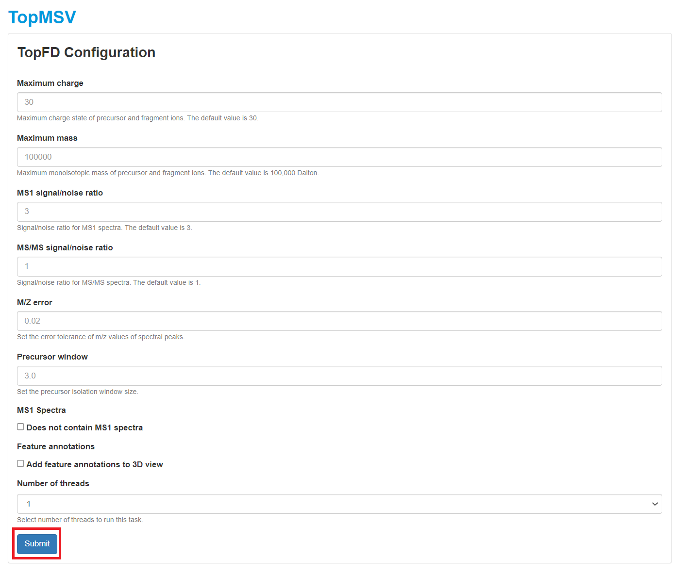
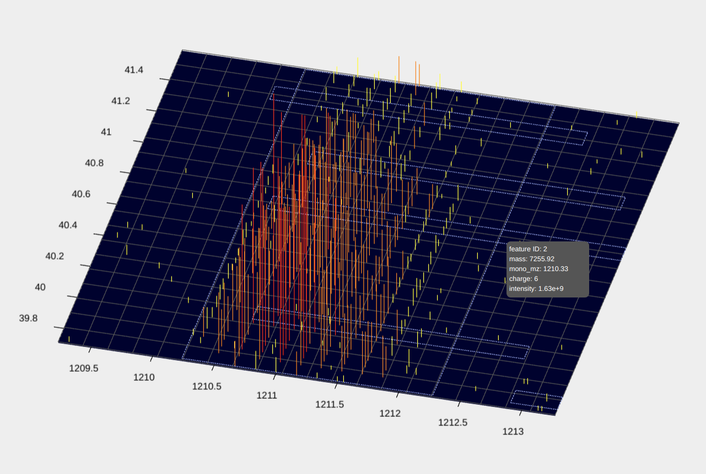

TopMSV
In this tutorial, we will show how to use the TopMSV Windows server to visualize an LC-MS/MS data set.
1. Downloading TopMSV
- Go to the Download web page.
- Choose the download type "Windows 64-bit zip file."
- Fill out the registration form, and click "I accept license agreement and download TopMSV" to download TopMSV.
- Create a new folder
C:\topmsv\server, save the zip file to the folder, and unzip the downloaded zip file to the folderC:\topmsv\server.
2. Starting a TopMSV server
Double click the batch file startServer.bat in the folder
C:\topmsv\server to start the server.
3. LC-MS/MS data visualization
3.1 Data
3.1.1 A top-down MS/MS Data set
In the MS experiment, the protein extract of S. typhimurium was reduced with dithiothreitol and alkylated with iodoacetamide. The protein mixture was first separated by gas-phase fractionation, resulting in 7 fractions. Each fraction was separated by an HPLC system coupled to an LTQ-Orbitrap mass spectrometer (Thermo Fisher Scientific). MS and MS/MS spectra were collected at a resolution of 60,000 and 30,000, respectively. In this tutorial, we use only the LC-MS/MS data file of the first fraction. The raw file was converted to an mzML file (st_1.mzML) using msconvert in ProteoWizard.
Click here
to download the data set, save it into the folder
C:\topmsv\data, and unzip it.
3.1.2 A protein sequence database
A S. typhimurium proteome database of 1,799 proteins was downloaded from the UniProt database.
Click here
to download the protein database and save it into the folder
C:\topmsv\data.
3.1.3 A text file of common post-translational modifications (PTMs)
Click here
to download a text file containing common PTMs and save it into the folder
C:\topmsv\data.
3.2 Uploading data
- Open the Google Chrome web browser, type in the web server address
http://localhost:8443/in the address bar, and click the "Enter" button in the keyboard to go to the main webpage of the TopMSV server. - Click the "Sign in" button in the top right corner to sign in as a guest.
- Click the "Upload" tab.
- Type in "st_1" as the project name, click the "Select mzML file"
button to select the data file
C:\topmsv\data\st_1.mzML, and click the "Submit" button to update the data file.


3.3 Data visualization
- Click the "My project" tab to show all projects.
- Click "Link" in the "Project link" column to visualize the LC-MS/MS data. A manual for data visualization can be found at the manual webpage. After the data file is uploaded, it takes several minutes for the server to store peak information into a database. if the "Project link" column shows "processing," please wait for several minutes until a link is available.


3.4 Adding deconvolution results
Spectral deconvolution results can be added to the LC-MS/MS data by (1) running TopFD at the server or (2) runing TopFD locally and uploading deconvolution result files to the server. When spectral deconvolution results are available, theoretical isotopic envelopes will be shown in 2D views of MS1 and MS/MS spectra.
3.4.1 Running TopFD at the server
- Click the "TopFD" button in the top right corner of the visualization webpage.
- Select parameter settings of TopFD and and click the "Submit" button. A manual of parameter settings of TopFD can be found here.
- After the task is submitted, the progress of the task can be found in the "Tasks" tab. When the task is finished, spectral deconvolution results reported by TopFD will be added to the database of the data set.

3.4.2 Uploading deconvolution results
- Run TopFD to perform spectral deconvolution of the data file
st_1.mzML. A tutorial for runing TopFD can be found
here.
Spectral deconvolution result files reported by TopFD include:
- C:\topmsv\data\st_1_file\st_1_ms1.msalign: deconvolution results of MS1 spectra.
- C:\topmsv\data\st_1_ms2.msalign: deconvolution results of MS/MS spectra.
- C:\topmsv\data\st_1_file\st_1_frac.mzrt.csv: proteoform features in the LC-MS map.
- Click the "Upload" button in the top right corner of the visualization webpage.
- Click "Choose file" to choose the files
C:\topmsv\data\st_1_file\st_1_ms1.msalignandC:\topmsv\data\st_2_ms2.msalign, and click the "upload" button. - Click "Choose file" to choose the file
C:\topmsv\data\st_1_file\st_1_frac.mzrt.csv, and click "upload" button.

3.4.3 Visualization of deconvolution results
- When deconvolution results are avaiable, theoretical isotopic envelopes will be added to 2D views of MS1 and MS/MS spectra. In addition, a table of deconvoluted monoisotopic masses will be added to the visualization webpage.
- The file st_1_fract.mzrt.csv contains features reported from the LC-MS map. When feature information is available, features will be shown as dotted rectangles in the 3D view of the LC-MS map. When the mouse pointer hovers over a rectangle, information of the feature will be shown.


3.5 Uploading spectral identfication results
Spectral identification results can be added to the LC-MS/MS data by (1) running TopPIC at the server or (2) runing TopPIC locally and uploading identification result files to the server. When spectral identification results are available, identified proteoform-spectrum-matches of MS/MS spectra can be shown and inspected.
3.5.1 Running TopPIC
- Click the "TopPIC" button in the top right corner of the visualization webpage.
- Click the first "Browse" button to choose the protein database file
C:\topmsv\data\uniprot-st.fasta, and upload it. If PTM charaterization is needed, click the third "Browse" button to choose the text fileC:\topmsv\data\common_mods.txt, and upload it. Choose parameter settings of TopPIC and click the "Submit" button to submit a task to the server. A manual of parameter settings of TopPIC can be found here. - After the task is submitted, the progress of the task can be found in the "Tasks" tab. When the task is finished, spectral identification results reported by TopPIC will be added to the database of the data set.

3.5.2 Uploading spectral identification results
- Run TopPIC to perform spectral identification of the data file
st_1_ms2.msalign reported by TopFD. A tutorial for runing TopPIC can be found
here.
Spectral identification result files reported by TopPIC include:
- C:\topmsv\data\st_1_ms2_toppic_prsm_single.tsv: proteoform-spectrum-matches (PrSMs) reported from the file st_1_ms2.msalign.
- Click the "Upload" button in the top right corner of the visualization webpage.
- Click the "Choose file" button to select the file
C:\topmsv\data\st_1_ms2_toppic_prsm_single.tsvand upload it.

3.5.3 Inspecting PrSMs
PrSMs identified by TopPIC can be shown and inspected.- In the visualization webpage of an MS/MS spectrum with an identified PrSM, click the "Inspect" button to inspect the PrSM.
- In the inspection webpage, the user can edit the protein sequence and then click the "Submit" button to inspect the match between the spectrum and the protein sequence.
- After the "Submit" button is clicked, a 2D view of the spectrum, a
2D view of the monoisotopic masses, and a table of matched masses
will be shown. A manual for the operations of the views can be found at the
manual webpage.